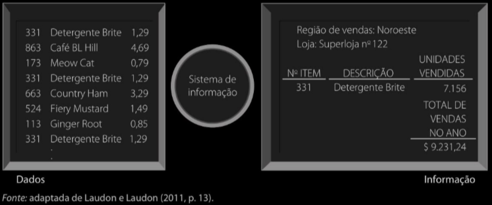
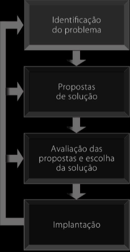
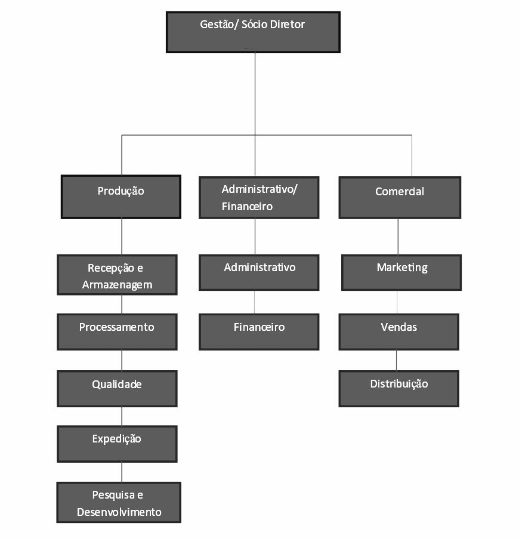
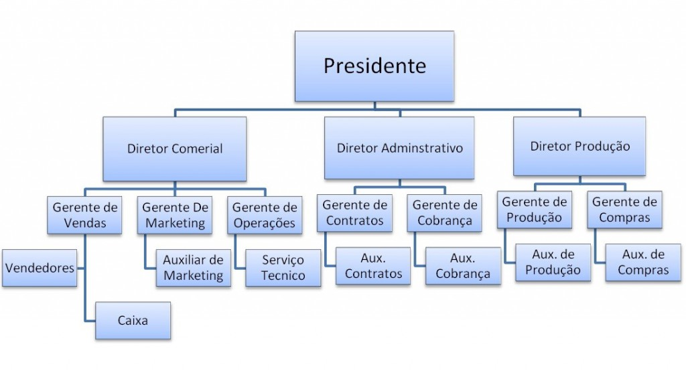
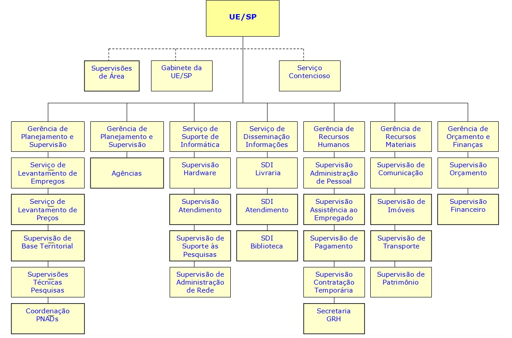
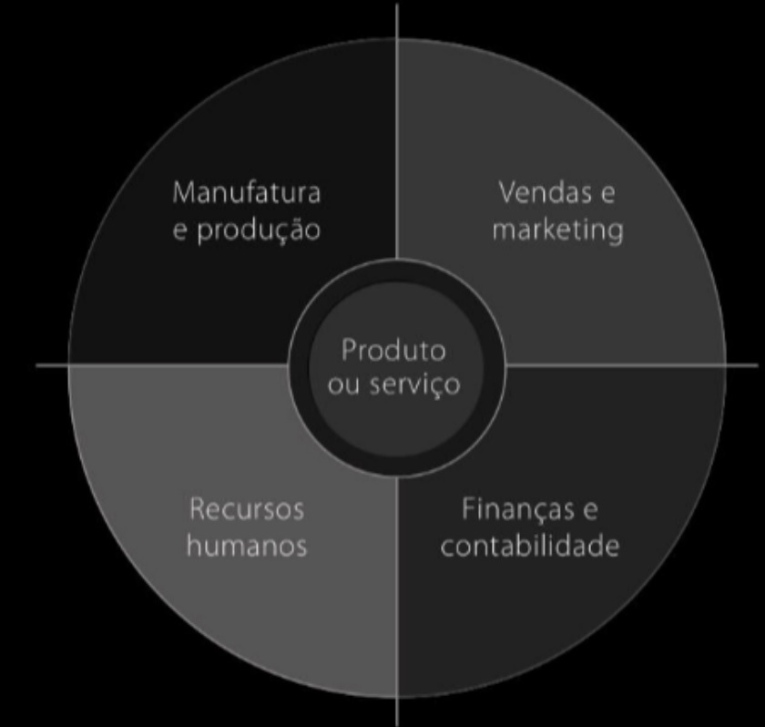
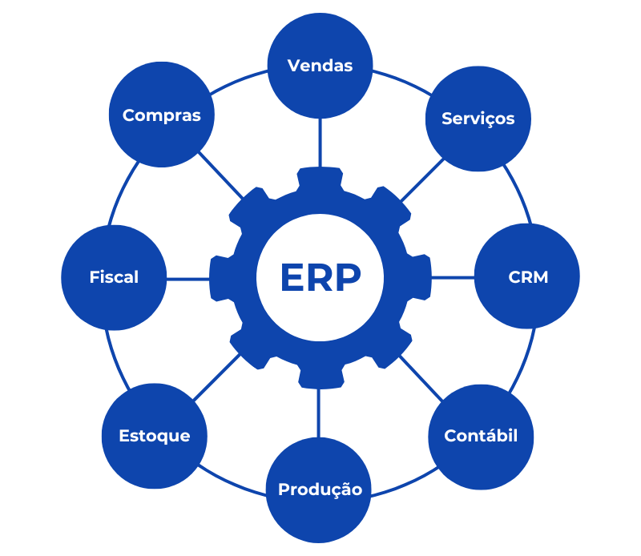
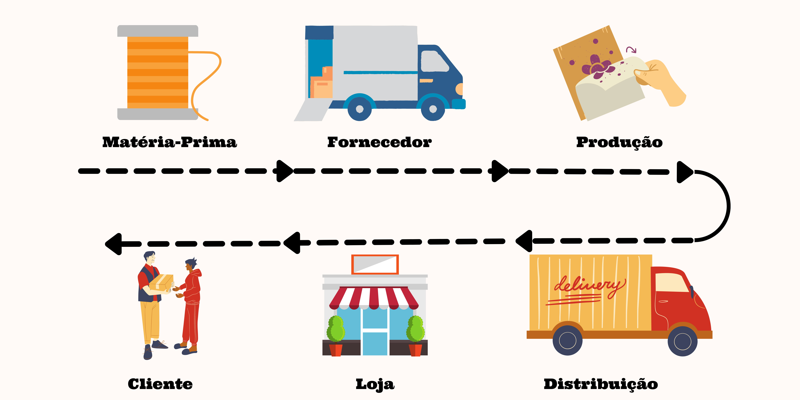
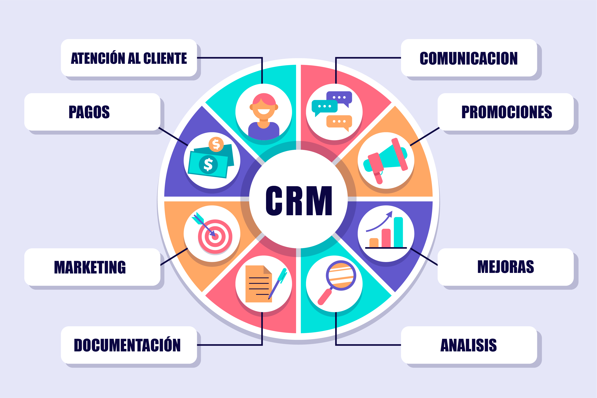

Anotações de Aula 1 INTRODUÇÃO A TIC (TECNOLOGIA DA INFORMAÇÃO E COMUNICAÇÕES)
1.1 Conceitos de Sistemas de Informação
1.1.1 O Dado
Conceito de Dados (DATA) segundo Prof Belmiro Nascimento João - USP - (autor SISTEMAS DA INFORMAÇÃO - 2a edição 2017)
Dados são sequências de fatos ainda não analisados, antes de serem organizados e ar ranjados de um jeito que as pessoas possam compreendê-los. (João, Belmiro Nascimento - 2017)
Informação é um dado organizado e apresentado de forma útil. (João, Belmiro Nascimento - 2017)
Conhecimento é o resultado da aplicação da informação para tomada de decisão. (João, Belmiro Nascimento - 2017)
Exemplo de Dados versus Informação:
As caixas dos supermercados registram milhões de dados, como o código de barras dos produtos. Se somarmos e analisarmos esses dados, pode mos obter informações significativas, como o número total de detergentes vendidos em uma loja ou as vendas por região.

Fonte: LAUDON E LAUDON (2011, Pág 13)
1.1.1.1 Conceito de TIC -Tecnologia da informação e Comunicação segundo Kenneth C. LAUDON, Jane P. LAUDON (2011)
As Tecnologias da Informação e Comunicação (TICs) são um CONJUNTO de tecnologias que combinam:
Tecnologia da Informação (TI): Refere-se ao hardware, software e redes necessários para processar, armazenar e distribuir dados e informações;
Tecnologia da Comunicação: Inclui as tecnologias que facilitam a comunicação e o compartilhamento de informações, como redes de telecomunicações, internet e dispositivos móveis.
1.1.1.2 Conceito de Sistemas de Informação (SI) segundo Kenneth C. LAUDON, Jane P. LAUDON (2011)
“Tecnicamente, um sistema de informação (Si) é um CONJUNTO DE COMPONENTES RELACIONADOS entre si que COLETAM (ou recuperam), PROCESSAM, ARMAZENAM c DISTRIBUEM [o que ?] INFORMAÇÕES que servem para apoiar a TOMADA DE DECISÕES, a COORDENAÇÃO e o CONTROLE de uma organização.” (LAUDON; LAUDON, 2011)
PERGUNTA: Um SISTEMA DE INFORMAÇÃO (SI) é a mesma coisa que um computador (smartphone) com um software (app)?
a ) sim ? Porque ?_________________________________________________________________________________________
- nâo ? Porque ?_________________________________________________________________________________________
1.1.3 Os Sistemas de Informação e o Mundo dos Negócios
Em uma visão global, segundo JOAO, BELMIRO NASCIMENTO (2018) os Sistemas de Informação dentro das organizações são
soluções para vários problemas e desafios organizacionais. Essa abordagem tem relevância direta para sua carreira, pois seus futuros empregadores contratarão você por sua habilidade em resolver problemas e atingir objetivos.(JOÃO, BELMIRO NASCIMENTO - 2018)
1.1.4 A abordagem da resolução de problemas organizacionais
No mundo dos negócios as demandas (ou problemas) podem ser agrupados em 3 categorias:
organização;
tecnologia;
pessoas;
Segundo Kenneth C. LAUDON, Jane P. LAUDON, solucionar probelmas será sempre um processo contínuo de 4 passos:
Identificar [do problema ou demanda];
Receber as propostas para Solução [do problema ou demanda];
Avaliar as propostas e escolher a Solução [do problema ou demanda];
Implantar a SOLUÇÂO escolhida [para resolver o problema ou demanda];

| Os 4 passos para solucionar problemas (LAUDON e LAUDON) | Detalhes |
|---|---|
| 1- Identificar [problema ou demanda] |
|
| 2- Propor Solução [problema ou demanda] |
|
| 3- Avaliar Propostas [problema ou demanda] |
|
| 4- Implantação [problema ou demanda] |
|
1.2 Os diferentes Tipos de Sistemas de Informação
Empresa existe para (cumprir seu propósito que geralmente é) DAR LUCRO !
1.2.0.1 Organizações com fins lucrativos - Empresas
Uma empresa é uma organização formal cujo ob jetivo é produzir produtos ou prestar serviços a fim de obter lu cro. E como obter lucro? A conta é simples: vendem-se produtos a um preço superior aos custos da produção.
1.2.0.3 Organograma de uma Empresa: Uma Representação Visual da Estrutura Organizacional
Um organograma é uma representação gráfica da estrutura interna de uma organização, mostrando a hierarquia, os cargos, as funções e os departamentos que a compõem. Ele serve como um mapa visual da organização, facilitando a compreensão de como as diferentes partes se encaixam e como o poder e a responsabilidade são distribuídos.
1.2.0.4 Organograma Conceitual

Organograma Empresarial - Varejo

Organograma Empresarial - Indústria
Aparece uma “organela” responsável por PRODUÇÃO

Organograma Organizacional - Organização Sem Fins Lucrativos - Orgão Público
Exemplo: organograma da Superintendência Estadual de São Paulo do IBGE - Fundação pública da esfera do Poder Executivo Federal

Missão institucional dessa “organização” federal “Retratar o Brasil com informações necessárias ao conhecimento de sua realidade e ao exercício da cidadania”
1.2.1 Organizando uma organização tipo empresa: funções empresariais básicas
Imagine que você queira abrir seu próprio negócio. Você preci sará tomar várias decisões: o que produzir ou qual serviço prestar. Essa é uma escolha estratégica, pois vai determinar seus prováveis consumidores, os funcionários de que precisa, os métodos de pro dução c muitos outros aspectos. Depois de decidir o que produzir, você deve definir de que tipo de organização vai necessitar. Primeiro, pense em um arranjo de pessoas, máquinas c processos de negócios capaz de produzir. Em segundo lugar, monte uma equipe de marketing e vendas capaz de atrair clientes e vender o produto. Em terceiro, após as vendas, é preciso organizar uma equipe de contabilidade e finanças para cuidar das transações financeiras correntes, como pedidos, faturas e folhas de pagamento. Calma, ainda não acabou: também são necessárias pessoas para cuidar dos assuntos relativos aos funcio nários, como recrutamento e capacitação.
Essas quatro funções básicas - que você poderá ver na figura abaixo são encontradas em qualquer empresa. A figura também ajuda a identificar as princi pais entidades que formam uma empresa: fornecedores, clientes, funcionários, os salários que ela paga e, é claro, os produtos e serviços que produz.

Fonte: adaptada de Laudon e Laudon (2011, página 37).
Organização -> Conhecimento do Negócio -> Processos Mapeados -> Sistema de Informação Mapeado

Processos do Cliclo de Vida da Produção de um produto (Indústria)
1.3 Sistemas de Informação e Vantagem Competitiva
As empresas que se destacam em seus setores geralmente possuem algum tipo de vantagem competitiva.
As vantagens competitivas podem vir de dois aspectos a seguir:
recursos especiais;
uso mais eficiente desses recursos;
| Vantagem / Sistemas de Informação | SI ERP | SI SCM | SI CRM |
|---|---|---|---|
| Excelência operacional; | ALTA | ALTA | ALTA |
| Novos produtos, serviços e modelos de negócios; | MÉDIA | SIM | SIM |
| Relacionamento mais estreito com clientes e fornecedores; | MÉDIA | ALTA | ALTA |
| Melhor tomada de decisões; | EXTREMA | ALTA | ALTA |
| Sobrevivência no mercado; | ALTA | ALTA | ALTA |
1.4 Tipos de sistemas de informação empresariais
Sistemas de processamento de transações (SPTs); Monitoramento de pedidos de expedição de mercadoria; Monitoramento de pedidos de atendimento;Sistemas de informações gerenciais (SIGs); Relatório de faltas de funcionário; Relatório de mercadorias com defeito;Sistemas de apoio à decisão (SADs); Sistemas Business Inteligence;Sistemas de apoio ao executivo (SAEs); Relatório de vendas consolidado aos acionistas; Relatório de competitividade;Sistemas integrados (ERP); Gestão e colaboração departamentos;
Sistemas de gestão da cadeia de suprimentos (SCM); Monitoramento de entrega de vendas on-line; Monitoramento Drop-Shipping;
Sistemas de gestão do relacionamento com o cliente (CRM); Relatório de satisfação de clientes; Relatório de Retenção de Clientes;
Sistemas de gestão do conhecimento (SGCs); Sistemas ITL; Sistemas de prestação de suporte técnico;
1.4.1 Sistemas integrados (E.R.P. - Planejamento de Recursos Empresariais ou Enterprise Resource Planning )

O termo ERP foi cunhado pelo Gartner Group em 1990. Um sistema ERP, segundo Davenport (1998)
” ERP é um sistema de software que integra todas as áreas funcionais de uma empresa, desde finanças e contabilidade até produção e vendas. ” Davenport, T. H. (1998). Putting the enterprise into the enterprise system. Harvard business review, 76(4), 121-131.
As principais funções de um sistema ERP em empresas do varejo são:
Centralizar a gestão operacional
Gerir o estoque e os suprimentos
Emitir notas fiscais
Controlar as finanças
Cadastrar clientes e produtos
Administrar a empresa
Alguns exemplos de SIs ERPs, em 2025, são:
Pacote SAP ERP;
Pacote Oracle ERP Cloud;
Pacote Microsoft Dynamics 365;
Pacote Infor ERP;
Pacote NetSuite ERP;
Sistema ERP TOTVS;
Sistema ERP Web BLING;
1.4.2 Sistemas de gestão da cadeia de suprimentos (supply chain management - SCM)

Os SI SCM são ferramentas essenciais para otimizar o fluxo de produtos, informações e finanças desde a origem até o consumidor final. Eles abrangem todas as etapas da cadeia de suprimentos, desde a aquisição de matérias-primas até a entrega do produto final ao cliente.
Segundo Simchi-Levi, D., Kaminsky, P., & Simchi-Levi, E. (2008)
SCMé um SI que faz um conjunto de abordagens utilizadas para INTEGRAR eficientemente FORNECEDORES, ARMAZENS e LOJAS, de modo que as MERCADORIAS sejam PRODUZIDAS e DISTRIBUÍDAS nas QUANTIDADES certas, para os LOCAIS certos e nos MOMENTOS certos, a fim de MINIMIZAR os CUSTOS de todo o sistema, satisfazendo os requisitos de nível de serviço. Designing and managing the supply chain: concepts, strategies, and case studies de David Simchi-Levi, Philip Kaminsky e Edith Simchi-Levi. (2008)
As principais funções de um SI SCM são:
Reduzir custos: Otimizando processos, estoques e transportes.
Melhorar a eficiência: Agilizando o fluxo de produtos e informações.
Aumentar a satisfação do cliente: Garantindo entregas no prazo e produtos de qualidade.
Otimizar toda a cadeia de suprimentos: Interligando todas as etapas, desde fornecedores até clientes.
Alguns exemplos de SIs SCMs, em 2025, são:
Oracle SCM Cloud;
SAP SCM;
Blue Yonder (JDA Software);
1.4.3 Sistemas de Relacionamento com Cliente - CRM (Customer Relationship Management)

São SIs de análise de clientes, com o objetivo de melhorar o relacionamento, aumentar a fidelização e impulsionar as vendas. Segundo Kotler, P., & Keller, K. L. (2016), um um CRM pode ser definido assim
Um SI CRM implanta o processo de gerenciar informações detalhadas sobre clientes individuais e gerenciar cuidadosamente todos os pontos de contato do cliente para maximizar a lealdade do cliente. Kotler, P., & Keller, K. L. (2016). Marketing management
As principais funções de um SI CRM são:
Coleta e organização de dados: Reunindo informações sobre clientes, histórico de compras, interações e preferências.
Automação de processos: Otimizando tarefas de marketing, vendas e atendimento ao cliente.
Análise de dados: Identificando padrões e insights para melhorar a tomada de decisões.
Personalização do atendimento: Oferecendo experiências individualizadas aos clientes.
Alguns exemplos de SIs CRMs, em 2025, são:
Salesforce CRM;
Microsoft Dynamics 365;
HubSpot CRM;
Zendesk Sell;
1.6 Questões
Qual o papel dos sistemas de informação no ambiente de negócios contemporâneo?
Quais são os objetivos organizacionais dos sistemas de informação?
Qual a diferença entre dados e informações?
Quais são as atividades básicas em um sistema de informação?
O que são abordagens de resolução de problemas organizacionais e como aplicá-las?
O que é uma empresa e quais os seus componentes?
Quais as funções básicas de uma empresa?
Quais os níveis hierárquicos de uma empresa?
Quais os tipos de sistemas de informação empresariais?
O que é colaboração?
Qual a função dos sistemas de informação em uma empresa?
Como usar os sistemas de informação para conquistar vantagem competitiva?
1.7 Testes múltipla escolha
1. Qual das seguintes alternativas descreve melhor o propósito e a função de um Sistema de Planejamento de Recursos Empresariais (ERP)?
Um sistema ERP é utilizado principalmente para gerenciar o relacionamento com os clientes, coletando e analisando dados de interações para melhorar as vendas e o atendimento ao cliente.
Um sistema ERP foca-se na gestão da cadeia de suprimentos, coordenando atividades entre fornecedores, fabricantes e distribuidores para otimizar o fluxo de produtos.
Um sistema ERP é projetado para capturar e aplicar conhecimento dentro da organização, facilitando a criação, o armazenamento e a transferência de expertise entre os funcionários.
Um sistema ERP integra processos de negócios em áreas como manufatura, finanças, vendas e recursos humanos em um único sistema de software, permitindo o acesso e o compartilhamento de informações em toda a organização.
Um sistema ERP serve para analisar dados históricos e atuais da empresa, a fim de identificar tendências de mercado e prever o comportamento do consumidor.
2. Qual das seguintes alternativas descreve melhor a função de um sistema de informação (SI) em uma empresa?
Um SI serve principalmente para gerenciar a cadeia de suprimentos, otimizando o fluxo de produtos desde os fornecedores até os clientes.
Um SI tem como principal função coletar dados brutos e não organizados sobre as operações da empresa.
Um SI é um conjunto de componentes relacionados que coletam, processam, armazenam e distribuem informações para apoiar a tomada de decisões, a coordenação e o controle da organização.
Um SI é usado para transformar dados em informações úteis, apresentando-os de forma organizada e compreensível.
Um SI é utilizado principalmente para integrar todos os processos de negócios da empresa em um único sistema de software, facilitando o acesso e o compartilhamento de dados.
1.8 Respostas questões:
- Qual o papel dos sistemas de informação no ambiente de negócios contemporâneo?
Resposta: Ajudar a atingir Objetivos organizacionais, promover a transformação do negócio, promover integração e colaboração das áreas, criar Vantagem competitiva e, finalmente, ajudar na tomada de decisões.
- Quais são os objetivos organizacionais dos sistemas de informação?
Resposta: Promover excelência operacional, possibilitar novos produtos e modelos de negócio, ajudar o relacionamento entre clientes e fornecedores.
- Qual a diferença entre dados e informações?
Resposta: Dados são sequência de informações ainda não analisados. Informações são dados apresentados de forma útil.
- Quais são as atividades básicas em um sistema de informação?
Resposta: Entrada, Processamento e Saída.
- O que são abordagens de resolução de problemas organizacionais e como aplicá-las?
Resposta: Identificar Problema, Propor Solução, Escolher Solução, Implantar Solução.
- O que é uma empresa e quais os seus componentes?
Resposta: Uma empresa é uma organização formal cujo objetivo é produzir produtos ou prestar serviços a fim de obter lucro. Seus componentes são CLIENTES, FORNECEDORES, FUNCIONÁRIOS, PRODUTOS E SERVIÇOS.
- Quais as funções básicas de uma empresa?
Resposta: Manufatura e produção, Vendas e marketing, Recursos humanos e; Finanças e Contabilidade.
- Quais os níveis hierárquicos de uma empresa?
Resposta: Gerência sênior (Conselho Diretor e Presidente), Gerência média (Diretores), Gerência operacional (Gerentes), Trabalhadores do conhecimento (analistas setoriais), Trabalhadores de dados (analistas setoriais), Trabalhadores dos serviços ou da produção (chão-de-fábrica).
- Quais os tipos de sistemas de informação empresariais?
Resposta: Sistemas integrados (ERP), Sistemas de gestão da cadeia de suprimentos (SCM), Sistemas de gestão do relacionamento com o cliente (CRM) e Sistemas de gestão do conhecimento (SGCs).
- O que é colaboração?
Resposta: colaboração é o trabalho com os outros para alcançar metas claras e compartilhadas.
- Qual a função dos sistemas de informação em uma empresa?
Resposta: Coletar (ou Recuper), Processar, Armazenar e distribuir INFORMAÇÕES.
- Como usar os sistemas de informação para conquistar vantagem competitiva?
Resposta: Melhorando a gestão de processos de negócios.